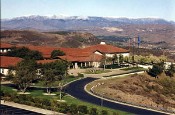
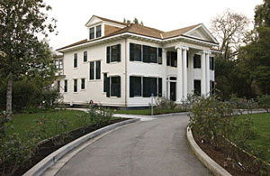

The Next 20 Years
In discussing The Review with friends and fellow editors and staffers, I often find myself giving an account of what occasioned The Review. Though I was only a few weeks old at this paper’s inception, our archives and a general knowledge of Stanford history have allowed me to piece together the portrait of an intensely radical and vehemently left-wing campus.
We faced a distinct minority of vocal and zealous advocates for vacuous multiculturalism, unmoored relativism, and staunch monistic leftism to whom reasoned dissent and opposition was a dangerous anathema. They set the administration’s agenda, imposed their definition of permissible and impermissible behavior in the Stanford community, and vilified those who failed to hold their enlightened views.
Editor’s Note: A Review Reflection
It’s a great honor to preside over a publication like The Stanford Review during its twentieth anniversary. A quick look through The Review’s archives provides only a tiny snapshot of the immense number of things our paper accomplished over the years. Not only did The Review help take Stanford’s Speech Code to court (and win), but we convinced students to stop funding an ethnic organization with racist values, exposed unfaithful hunger strikers, and forced a change in the University’s distribution policy.
Cartoon: 20 Years of Saving the Day
Veteran Review Cartoonist Paul Craft portrays The Review as a campus hero, fighting political correctness.

Looking Back on the Lost Reagan Library
That the Reagan Library wouldn’t be based at Stanford probably came as a great surprise to a large number of people. Up until the point of the withdrawal of the proposal by the Reagan Foundation, all indications were that things were progressing normally. What, then, caused the Reagan Foundation to back out? Why did Stanford lose a valuable resource such as the Reagan Library?
Stanford and the Real World
We’re barely one month into the 1988-89 school year, and the indications already are that this is going to be a wild one. Contra leader Adolfo Calero has been banned from campus, minority student groups have launched a witch hunt for “racists,” minor left-wing writers are replacing the West’s great thinkers in the CIV track, Stanford’s student government is trying to raise student tuitions (so that Stanford workers can be given a hefty pay increase), and Stanford’s SDI scientists are being harassed for their “immoral” research.
The Fight for Greek Independence
It is becoming increasingly clear that there are forces at work within the Stanford Administration to squeeze the collective breath from Stanford Greek life. There is some question as to whether this is being consciously orchestrated by some administrators or if it is simply the nature of ResEd and the campus bureaucratic beast. There is no question, though, of the fact that housed fraternities in particular are dropping like flies.
No Free Lunch: Milton Friedman views ‘Liberty’ and ‘Welfare’
One of the most famous maxims among conservative economic circles since the 1960s is the tenet, “There’s no such thing as a free lunch.” Milton Friedman, Senior Research Fellow and the celebrated economist who coined the phrase, was proven wrong last week when the Institute for Humane Studies (IHS) treated one hundred students from universities all over California to lunch and a speech by Dr. Friedman at Tresidder Union--all for free.
|

Online Edition Exclusive: Israel’s Defeat on Campus
The image of Arab Muslims in the Western world seems to be in decline. Whether this is because the “misinterpreters” of Islam manage to unleash an even grizzlier and more gratuitous wave of violence every time people think things couldn’t get any worse, or because the familiar stories about “root causes” and “frustration on the Arab street” ring hollow in the face of real beheadings, even some Europeans are slowly waking up to the smell of torched cars and coming to terms with the true substance of Islamic fascism.
Stanford Review is Here to Stay
Welcome to the first issue of the Stanford Review. Our motivation in writing this paper is threefold. First of all, we would like to present alternative views on a wide range of current issues in the Stanford community. On many of these issues, a vocal few have succeeded in dominating the discussion, often with views very different from those of the Stanford mainstream. Many of the more moderate students in the Stanford community remain silent, believing that it makes little difference whether they speak out or not. By presenting these alternative views, it is our hope that the Stanford Review will succeed in bringing about some much-needed debate.
Liberty, Equality, and Fraternity for All
“I want an exposé!” my editor cried. “Something with a lot of muck we can rake through the pages of the Review.” “What About?” I asked in my usual cool, professionally unbiased manner. “Waste and abuse in ASSU? Cover-up at the Stanford Sex Shoppe?” “I want you to do an exposé on the fraternities.” “But the frats are just a bunch of guys who like to live together and party together,” I protested. “The Greeks are the keepers of traditions, our school consciousness, and the most enthusiastic sports fans around. Why pick on them?”
Woman of the Year: Condoleezza Rice
On Thursday, January 6, Stanford University Provost Condoleezza Rice met with The Stanford Review in her office to discuss the state of the University, her experiences as Provost, and her reactions to being named the Review’s “Woman of the Year.” Rice, who is the University’s ninth Provost, began her duties as the University’s chief financial and academic officer in September of 1993. Rice received her bachelor’s degree from the University of Denver, where she graduated Phi Beta Kappa. She then received her master’s degree from Notre Dame and her doctorate from the University of Denver Graduate School of International Studies. Rice first came to Stanford in 1981 as an assistant professor of political science. From 1989-1991 Rice took a leave of absence from the University to work in the White House as special assistant to the President for national security affairs. At 38, Rice is the youngest Provost in the University’s history.
“Get the Hell Out of Here”: Zapata Resident Fellow verbally Assaults Review Distributors
According to the Resident Fellow Position Description, a Resident Fellow is expected to promote pluralism and the free expression of ideas. “Resident Fellows encourage students to respect and learn from others whose backgrounds, ethnicity, or life experience differs from their own,” reads the document. “Through programming and by example, RFs actively promote inclusive communities where students of any race, class, gender, or sexual orientation may feel comfortable.” Last week, however, it became quite clear that José Burciaga was not doing his job.
An Investigation of Racism within MEChA
They’ve been called racist and worse. They claim to be a social justice group. You fund them. They are the Movimiento Estudiantil Chicano de Aztlán, or Stanford MEChA. Cochair Laura Godinez-Aviña agreed to an interview with the Review last Monday in El Centro Chicano to allow elucidation of their guiding principles. Unfortunately, 20 minutes after the scheduled interview time, Godinez-Aviña went back on her word, stating that the request would in fact not be honored. The leadership of MEChA, she and other Co-Chair Francisco Cendejas, decided not to give an interview, even in light of our recommendation that an interview would help present their group in a fair and balanced way. However, an emailed general position statement from Cendejas is all that was allowed.
Icy Welcome Fails to Ruin Bush’s Stanford Visit
On Friday, April 21, President Bush stopped at Stanford as part of his four-day California tour. While here, Bush conversed with Hoover Fellows and university officials about policy ideas in a relatively informal format. Originally, the discussion was to be held in the Lou Henry Hoover Building on campus. News of Bush’s visit spread quickly once released, and protesters gathered Friday afternoon to vilify Bush. Things turned ugly when, during the course of the protest, several demonstrators lied down in the street, preventing the President’s motorcade from approaching. The meeting was then moved to the home of George Shultz—Senior Hoover Fellow and former U.S. Secretary of State from 1982 to 1989.
|